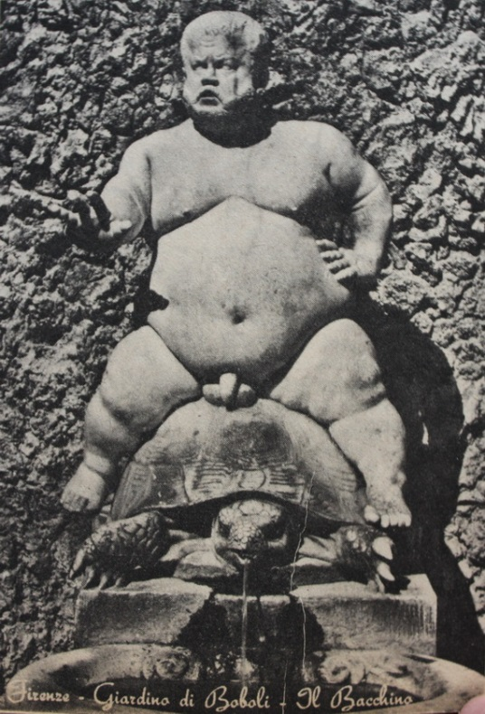

Türk Konsolosluğuna
Ben Zarife Eyigıcıklar. Ben Zarife Eyigıcıklar beş yıldır Alamanyada çalışıyor olan kocam Şuayib Eyigıcıklar, ben burada dört çocuğumla yalnızım. Gitti gideli bize beş kuruş göndermedi, çocuklarım adam olsun gider gitmez sizi yanıma aldıracam ve bakacam diyerek. Ben kendim el kapılarında çalışıp çocuklarıma bakarımsa da, bugün beşinci aydır, ve ayın ikinci günü bacağım kırık olarak attılar beni Mutfak dolaplarını temizliyordum beyin. Sandalyenin bacağı kırıkmış. Çok hastayım, bize bakacak Tanrı’mdan başka bir kul yok. Konu komşu bir çorba getirirse yerim çocuklara: Onun için kocamı bul yavrularıma baksın. Bundan altı ay oluyor, bir mektup aldım, beni boşamak istiyor o beni kaçırarak evlendik, ben ondan boşanmam, istediğini yapsın bana da koca olmasın, ben ayrılmam azıcık dirilsem bir göz gecekondumu satar gelirim. O yüze duramaz. Sen istersen herkesi bilirmişin dediler onun için.
mektubu yazan büyük kızım Nurcan Eyigıcıklar 10 yaş, ondan sonraki oğlum Ocan eyigıcıklar yedi yaş, öteki kız Bircan Eyigıcıklar altı en küçük Cancan 4 yaşında ellerinden öperler. Ne olur oh kardeşim, kocamı bul bana, ayaklarının altım öpeyim, çok darlandım. Kocamın Adresi
Her Şuayip Eyigıcıklar
Schuhfabriken Odermette und COAG
Zurbach - Deutschland
Sana bir tane de eski fotoğraflarından gönderiyorum, kolay bulursun, kucağındaki Ocanımdır. öbürü Hanifenin büyüğü, anası oraya kaçtı. Ciritci Mehmet almıştı bu resmi, makine Günsüz Cemilindi. Tanrım kimseyi elden ayaktan düşürmesin kardeşim, İskambil Recep son olarak görmüş onu orada, hiç bu resimdekine benzemiyormuş.
İyiler yüzü suyu hürmetine bul onu allah aşkına, ellerinden öperiz.
Sevgili eşim,
Senden çok ricam, allahaşkına benim dönmemi istersen ve yine biraraya gelmemi istersen ve çocukları öksüz etmemek istersen ve allahını seversen, Tanrı adına, benden birgün önce boşanırsan birgün eve gene beraber oluruz, ayrılmadan beni bekleme sevgili eşim.
Başıma öyle bir iş geldi ki sorma, beni ve çocuklarını seversen beni boşa ve bir yıl sonra bekle gelicem.
Aksi oldu gelemem, ömrümün sonuna dek sonsuz selamlar sevgili eşim, Boşarsan namusum üstüne gelirim.
Eşin Şuayip.
Sevgili Ablacığım,
Her iki yanımdan yapılan iğneler yüzünden gece ve gündüz acımaktayım. İlk iğnenin ardından ikincisi geldi, uçları küt ve kıvrıktı, yüzün sapsarı karasarı kesilir. Üçüncü yine o iki dişi önden çıkık hemşire yüzü şöyle, bataklık sazları var ya işte o renk, elinde oklava denli uzun halat gibi bir iğneyle gelince, içi selvi ağaçları var ya işte o renk ağıyla doldurulmuş, artık buna dayanamam. Kapmamla elinden yere yatırdım ve iğneledim, iğneledim, iğneledim, çünkü ben de iğne yapmasını biliyorum artık, gelince İğneci Hüseyin Efendi düşünsün...
Tabii ablacığım beni yakalayarak bir odanın içinde kaim kemerlerle bağlayıp üçgün üçgece aklımı oynatana dek yatırdılar. Altımı hep ıslattım, gece hemşiresi yaşlı bir frolayin geldi, beni kaldırdı çözdü, hiç bir yere tuvaletten başka gitmeyeceğime sözümü aldı. Söz verdim bir kez ablacığım, dönmem, bir de pöçümün ağrısına durabilsem... bir de o kokuyu duymasam... Cancanımı toprağa koyup döndüklerinde elleri tabutsuz kokan.
Burada, trenden ilk indiğimde istasyonun tuvaletinde birden duydum kokuyu kalbim çarpmaya ve terlemeye başladı. Polisi bulup Şuayibi sorayım dedim, ardımda belirdiler adamları sarı gözlü ve mavi saçlı olarak, pembe yanaklarından dişleri görünerek bilenen, hemen polise bunu da anlattım, “yakalayın yakalayın” diye göstererek dişlerini sorgu bile etmeden bir otomobile atarak beni, buraya kantonşipitay derler getirdiler. Buluruz biz dediler, ama nerde ablacığım, bulamadılar. O herişi bilir dedikleri konsolos başı da bulamadı heh! ben de onu bir adam sandım. Onu ben bulacağım, bulmadan dönmem, buralara dek geldim fabrikalarda süründüm, iş buldum geldim... Daha oralardaykene neler çektimdi:
Sekiz gün sekiz gece beklediydim, tren istasyonunda bizim. Ayrıl gelirim dediydi, söz verdiydi, gelme gününde gittiydim. Ocanımı da yanıma kattıydım, sekiz gece ve gündüz uyku bilmediydim, herkesler çıktıydı, trenler bomboşaldıydı. Abdestsiz Yakup, Dursungillerin İdris, Safinazın Davut, İskambil Recep, Körük Mustafa indiydiler, “onu görmedik, onu bekleme gelmez” dediydiler. Çarpuk Haydar. Ebe Rahime, Çöp Hüseyin indiydiler, “bekleme gelmez” dediydiler. “Gebez Emineylen, Yürüğün Havvası da gelmez artık” dediler, “gavura orospu oldular” dediler. “İdrisin Hanife, kör Musa delirdi”, “Ciritd Mehmet otomobile çiğnendi", “Ama Şuayibi hiç bekleme” dediler. Bu bizim köyü oralara kaldıran hep o Günsüz Cemildi. “Günsüzün iki otomobili vardı ama onu bastılar. esrardan yakalandı, içeri girdi” dediler.
Sekizinci gecenin sabahıydı, Ocanımı sıraların üzerindeki uykusundan kopardıydnn. trene karşı durduyduk, artık bundan çıkar dediydim, tren bomboşaldıydı, herkes birine kavuştuydu, son yolcu da indiydi, Ocanım bana baktıydı. hiç bi söz etmediydi, ağlamadıydı, babası Alamandan urbalar, şapkalar, kunduralar getirir bellediydi, çakmak çakmak baktıydı, ben buralara geldiydim, ilk yemeği getirdiydiler, ilk yemekte herkes korkuyordu burada, herkesin gözleri çimen bağlıyordu, herkes yemeğini ötekine vermek için dakikayı fırsat bilip veriyordu. Bana da bunu yaptıydılar ama yemedim, kendi aralarında beni yalnız bırakarak beni konuşmaya başladılar birden, elbette benim öğrenmemi istemezler ama başladım bile çalışmaya heh heh heh!...
Bangue Nationale
Kent
Makswell
Hotel Krone
Scweppe
Neu Zürcher Zeitung
E. Winkler and Cie.
Sabah banyo yaptığımda su akıp gidince, bembeyaz banyonun dibinde yağlıkara bir su birikiyor başka buzlu cam kapı açılıp beni sınamak için sıraya diziliyorlar, ben düşmanlarıma göstermem kendimi, karanlık basıp da gece kuşları uçmaya başlayınca penceremin önünde bu kez de hani funda rengi var ya o renkle yazıyorlar ezberletmek için:
Pepsi
Springler
Farbwerke
Hoechst
Basf
Krupp
Zimens
Lark
Bu larklardan heryerde vardır, hani bize verdikleri o pis kokulu ördek lazımlıklarına denir. Dün ve bugün içtiğim kahve beni baştan aşağı titretti, ve ter içinde düşürdü beni. Yeşil terledim ablacığım pencereden bakınca bahçede gördüğüm ağılı otlardan yapıyorlar bizler uyanmadan daha ıslakken bahçıvana biçtiriyorlar onları, anca buzlu sularla kendime gelebildim...
Hemşire mendil getirdi, gönderene teşekkür ederim. Mendile Külota, verdikleri beyaz peçetelere ve kurulanmak havlularına Oyalanmak içinŞZE işlemek istedim ama iğne vermediler ablacığım ne olur beni kurtarın buradan, ben hasta değilim artık, Şuayibi aramayacağım, Türk millet öldü mü ablacığım, beni sığındığım kucağından, vicdan size ait olmak üzere yakaran ve bağrı yanık bir Türk anası ve biri ishalden ölerek üç çocuğu kalmış bir ana ve eşini yoldaşını yad ellere yitirmiş bir eşim ki deri ve kemikten kervanım günahsız gövdemi aşındırıp yıprandıracak ve taşına gülmeyen kabrimin yolunu tutmaktan başka bir çarem olmadığım bilerek yaşayan bu bahtsız olmakla beraber her gece vatanıma ve sizlere duacıyım.
Geçende bizi parkta dolandırdılar. Taştan etler! insanlar çırılçıplak havuz başlarında tutunmuş, heryanı bize yaptıkları kahveden ekilmiş bahçeler ve dönünce saat sekizi bir geçe biri birden gördü: hiçbir yerden hava gelmiyor ve saat sekizi iki geçe herkes birlikte fenalık geçirdi, bir hasta kız ağladı. Dün benim dolabıma çantamdaki kremin gelmiş buradakilere eczane veriyor ben de herkese pay ettim. Bu odada krem hırsızlığı var herkes kremini yanında getirip gezdiriyor.
Sevgilerimi gönderen kardeşine acıyın
Zarife Şuayip Eyigıcıklar.
Ablacığım,
Tanrı senden, eniştemden, Necdet Ulutürkten, erişilmez büyük Konsoloslarbaşından ki adı bana malum olmadı bir de doktorum Werher Hunt’dan razı olup aziz etsin — estafurullah — ki içlerinde azizlikten çok yukarı mertebelere yükselmiş kulların, generallik, paşalık rütbelerini aşanlar vardır.
Dün Necedet bey ve doktorum geldiler ve bir aya kalmaz taburcu edilirim dediler. Tanrı günah yazmaz ben bunların dilini de biraz öğrenerek konuşmamı ve anlaşmamı sağlayarak iyi oldum Bayer sadece aspirin mi ablacığım heh heh sen öyle san, ya M.A.N. bunlardan başbaşayken sana bahsedilecektir yerin kulağı var... Taburcu edilir edilmez... doğru Selinger-torplaza atlar, oradan Karlplaz ve Suddeutsche Zeitung’un berisinden kıvrılınca tren istasyonu... Güzel yerler güzel ama ruhsuz, Tanrı’sız buraları ablacığım, dinimizi bilmeyenlerin yaşadığı yerler. Korkmam kendi kendime gelirim Necdet’de yardım eder... Bu Necdet: Türk işçisi islamının sıkıntılarına ve Tanrının onlara verdiği deneme cezalarından — Motor en Werke Mannheim, Hoecht, Volkswagen — olmak üzere yad ellere gönderilen ve rızkını oradan çıkarmaya denenen müslümanların, şüphesiz ki önce Tanrım sonra adaletli hükümetimiz tarafından, “dini yayma ve unutturmama ve Türk vicdan ve bilgilerini koruma” üzere gönderilmiş bir bey idi... Konsolosumuz ki çok büyük bir zat olup —amenna ve saddekna— odasına çekilir biz kullarına gözükmez ama onlar için çeşitli yalnız kalma — odasında — işkenceleriyle düşünür konuşma yoksunu olur ve bizlerin krallığına uğraşır —biz neyiz ki yoksul işçi parçaları— ablacığım, o bile işte benim için telefon edip doktorum Werner Hunt’a “Türk ve İslam Zarife Eyigıcık lar iyi midir?” diye sorduğu bana söylendikte yüreğim köy köy oldu. Ardından Necdet bey ki (ikimiz arasında kalsın — Tanrıya yakınlık bakımından konsolosbaşımızdan kat be kat yukardadır, halkın arasına karıştığına bakma, bunun böyle olduğu burada çalışan işçiler arasında da dile gelmiştir, ve benim o fabrikada çalıştığım arkadaşlarımdan biri — Rızkiye— beni bir gün görmeye geldiğinde bunun böyle bilinip konuşulduğunu bana gizlice söyledi) gelip hal hatırdan sonra, daha benden genç ve diri —sık sık yoklardı beni— bir gün uzatarak bir paket bu Necdet Bey dünya ahret kardeşim, “Hervakit ki ne vakti tanrı içine bir sıkıntı, bir korku, bir yanma koyar açar bu kitabı okursun” — doktorumsa bunlar için hemen iğneleri bastır— dedi ki Tanrım mağfiretini bağışeder ve seni önce kocandan çektirip, düşürüp buralara, iki yavrunun canını da —amelle— alarak seni dener, o dener, nasıl ki hazreti Ali’yi, İbrahimi, Hatçeyi, Zekeriyayı, Yunusu, Keleşin gelinini, Günsüz Cemil'i, Partalın Sıtkıyı, Muhammetten önce ve sonra tüm peygamberleri ve insanları denemiş sabırlarını ölçmüş kendisine olan bağlılıkları gözden geçirmiş, geçirmektedir bu işin biteceği yoktur şimdi sıra bizim günmüzündür, bizlerindir, seçtiğini kendisinin yapmış koynunda şifa vardır onun, onun ezasından kaçınılmaz ve korkulmaz, cefasına gönül verilir, o biraz hain ve hoyratça sever acıtarak kendinin yapar... Çünkü ablacığım düşünürsen bir, beni denemek kendisine almak niyeti yoksaydı, orada durup dururkene ne zoruna tüm acıları bana yazmış olsun? Şuayip az mı severdi yuvasını? ağlıyarak gitmedi mi köyümüzden bir aya varmaz aldırırım seni ve yavrularımı, ve o iki yavrunun Bircanımla Cancanımın ne günahı vardı, her çocuk amel olur. Beni böyle türlü acılarla yoğurduktan sonra temelli eline kalayım onun olayım diye pişirdikten sonra işte ben şimdi içimin kuyusundan duyuyorum, Necdet de öyle söyledi bunlarda hep bir amaç var idi, ne vakitki Tanrının ruhundan biraz uzak kalırım bu kitabı okurum açar, kokular dağılsın ve darlanınca beni ara dedi telefonu 22356 olarak kazıldı zihnime, kazılmış toprak ise yeşildir, hiç korkmam, çuha çimenler, banyonun dibine biriken yağlı kara yeşildir, iki çocuk ölüsü, amel, kabristan dört arşın çeker, incir sütü yeşil akar, koruk, üzerine uzanılan çimenlerde Necdet, kör şeytan, yeşil yeşil yeşildir... Kuyu. İçine atlayacağın kuyular da yeşildir ablacığım bundan sonra bilgi vereceğim, ışıklı yazılar birini ararsın değil Şuayip değil de, bulamamak tanrının biz kulları için yarattıklarıdır...
Kızım Nurcanım gelinlik oldu diyorsun, ben onu daha memeleri yetmemişken ve uyurken yatağında bırakıp trene bindim, dönüşün gelin gününü görürüm, hiç olmassa anacığı başında olsun, babası buradan o kemik a.h sarı karıylan italyaya kaçtı diyorlar, zaten ablacığım gelse Şuayip ayaklarımın altını ısırsa ve gıdıklasa ve etse secde dizlerime, kulun kölen olayım bağışla beni, sensiz edemem, git git başımdan murdar! sen karşı geldin ve suç işledin ve yakılacaksın ve ulaklar gönderse gümüş ve altunlar ve kurbanlar ada istersen babaları olsan da onlara karşı geldin ve evimi attın şimdi seni tanrıya ısmarlıyorum ve sen insanın suçlarını insana tanrının suçlarını tanrıya ödersin... Hadi bakalım...
İki gözüm ablacığım,
62— Tavuk kaz, ördek hayvanlarının tersleri suyu bozar, Binaaneleyh içine düştükleri kuyunun bütün suyunu çıkarmak gerekir. Çünkü bunlar necaseti galizadır.
Sana aynen yazıyorum ablacığım bu kuyulara dair bölümden olup kitabın en yeşil yeridir. Çünkü
İzinli günlerimizde bizi parka çıkarırlar ve Necdet de bir kaç gün yanım sıra konuşarak dolaştık ve bir gün bu Sapıtmış Şuayibi anlatarak ona açıldım ve oturduk çimenlere beni affet abla, çimenlere birbirine kenetlenmiş ve açılmayan sağel parmakları sola, solunkiler sağa sıkışmışken, acı gücü ile beni yatırıp çimenlere ve uzanınca tatlı dili çözüldü parmaklarım ve bana bu kitaptan olacak parçalar okudu. Bunun üzerine geçen sabah o kokuyu duyarak ve ağlıyarak, “burası nere, neden düştüm ben bu ellere” diye karşı gelince Tanrıya uyup kör şeytana uyandığımda Necdet verdiği o kitabı açarak kalbime birikmiş gizli aşkıyla Tanrının okudum İstanbul Müftüsü Ömer Nasuhi Bilmen'in sonsuzluk içi bilgileriyle yazılmış açsan neresini ve daha 65, 67 maddeye gelmişken gelmişken o koku dağılmış ve tövbelerle arınmış olarak uyuyakalmışım...
65— Güvercin serçe gibi eti yenen kuşların tersleri kuyudaki ve kaptaki suyu bozmaz. Eti yenmeyen kuşların tersleri de suyu bozmaz. (İmami Şafii'ye göre bunlar suları bozarlar.)
Daha bizim bilmediğimiz hangi kuyuya atlanabileceğine dair mekruh olmayan sular, binlerce, ancak büyüklerimizin bilebileceği milyarlarca kuyular ve maddeler vardır dünyada ablacığım Tanrıya kendimizi sevdirebilmemiz için ama ne günahımız var bizim, bir öğreten olmalıydı ki...

Parktan dönüş bir kartpostal aldım, Mavi, Tanrı ablacığım, Necdet parasını da verdirmedi, buraların peygamberlerinden biriymiş dedi, hih hih hih! söz aramızda azıcık Necdet’i andırıyor, eniştem görmesin o da tıknazlığı bakımından bu peygamberi andırıyor, tanımadığım renkler var kartta ama gene de mavi Tanrı ablacığım çırılçıplak olmuş ağzından su fıskiyeleyen bir kocaman kaplumbağanın üstüne at bin oturmuş, at bin oturunca her bi yeri meydanda bacaklar kollar kısacık, göbekli göbeği hani herkesin takdığı kenarlı yuvarlak bir biçim var ya burda hep hemşireler ve kızlar takar boynuna işte onun biçiminde ablacığım saydım altı kenar göbeği, orası da öyle tam düşmüştü ki tıpkı üstüne bindiği kablumbağanın kabuğundan çıkardığı başı iki yanda da ayakları hih hih hih!..
Doktor Hunt dört yıldır burada olduğumu söylüyor, sanmam, daha dün gelmiş gibiyim, dündü treni beklediydim, tren bomboşaldıydı, herkes birbirine kavuştuydu, dündü... Ocanım kucağımdaydı... Bir de Fotika diye İstanbullu bir Türk daha varmış burada ama o çok tozuttuğu için görüştürülmezmiş... Yoksam o mavi Tanrı’da bir duvarın önünde kaplumbağanın ağzından işeyen yahudi mi ablacığım?.... Olamaz, Tanrı çıplak olabilir mi ablacığım gavur da olsa olabilir mi? O olursa biz de oluruz ablacığım... Artık ben onu gelin gününde görürüm, öldü bilsin babasını, konsolosbaşı da bir baba sayılır, Necdet de ulvi bir baba sayılır odamın penceresinden bakınca çimenlere üzerine işlenen günahımızı yazmış bir kez yazan, değiştiremessin, bir din adamı yalan söylemez: “Tanrı bunu da istedi beni sana ve seni bana yazdı’’ dedi, bunda bir sevap çentilmiş ki beni iyi edecek zaten çözüldü parmaklarım park kararır o sıra yeşil, yoksa gene mi beni denemektedir, gök tanrı gök, şüphesiz ama Necdet çimenleri, parkları bizim için yarattı demektedir, kartpostalları, buraya gelen dindaşlarımızı baba ocağından savurarak, inim inim inletip kıvrandırarak kabir azabından dünyada, vurarak yalnızlıktan yalnızlığa, yalnızlıksa hani sırf Tanrıya vergiydi yaaa! Ama acı yanlızlık buruk buruk buruktur arak ruha güç katan, kattıkça Tanrıya yaklaştıran, o ise: “ne o yoksa benimle boy mu ölçüşüyorlar” diye bir sille daha, yerden yere vur ya rab, vur! vur! diye şahlanıp sonunda kendine alacak, ey yüceler yücesi cayır tutuşmuşum, tahtına kapanmışım, yapma Necdet olmaz, ama Tanrı seni içime düşürdü ve Hazreti Muhammet — sellallahü teala— dahi kaç karı almış idi, olsun yoksa ben onun olası, o bana sahip olası kavi değil miyim? Başkaları var insan olarak beş nikah geçirip namusunla yavrusunla yuvasınla oturup... güçlüler var güçlüler keşke benim yerime sınamak için başkasını seçeydi şu Tanrı, hiç mi aklı yok, yüz akıyla sınavları geçecek, kör şeytan... bu ayak sesleri onun, hemşire Genuchhi iğneye geliyor, odur o, adım adım izler beni parkta ağacın yeşil ardından gözetledi bizi, kaçarken... Yeter artık tanıdım ayak seslerini, üç yıldır, onuüç yıldır, binüç yıldır görür o yeşili şimdi...